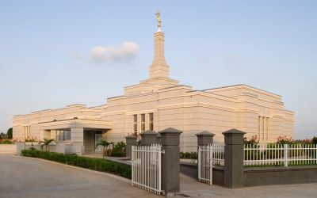
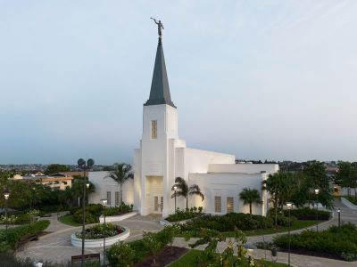
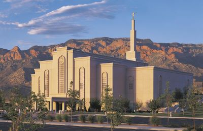
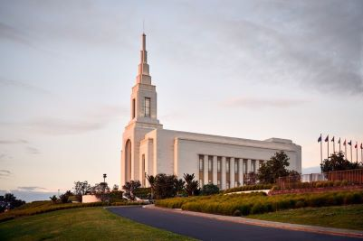
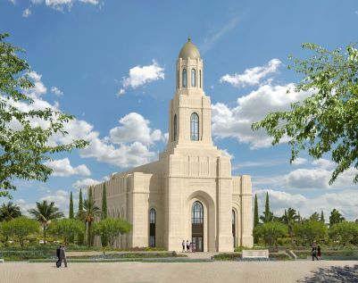
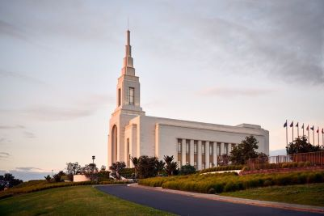
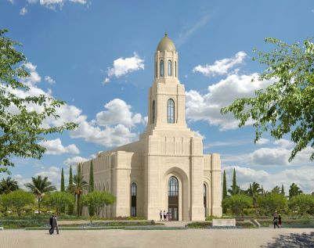

Home

Aba Temple 1, Nigeria

Abidjan Temple 2, Ivory-Coast

Abuquerque Temple 3, Mexico
 Accra Temple 4, Ghana
Adelaide Temple 5, Australia
Anchorage Temple 6, USA
Apia Temple 7, Samoa
Atlanta Temple 8, USA

Auckland Temple 9, New Zealand
Alabama Temple 10, Birmingham

Barcelona Temple 11, Spain
London Temple 12, England
Accra Temple 4, Ghana
Adelaide Temple 5, Australia
Anchorage Temple 6, USA
Apia Temple 7, Samoa
Atlanta Temple 8, USA

Auckland Temple 9, New Zealand
Alabama Temple 10, Birmingham

Barcelona Temple 11, Spain
London Temple 12, England